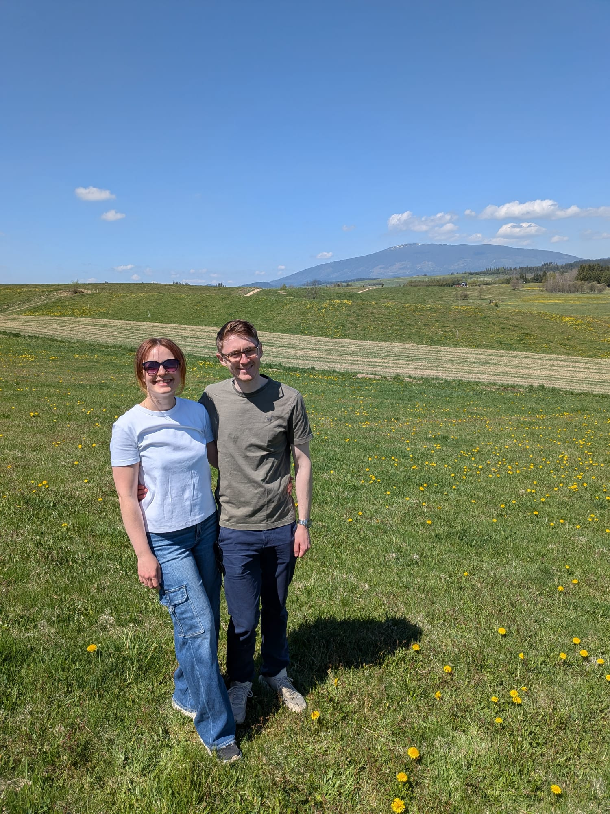

Kraków
We got engaged in Kraków, and would highly recommend the Czartoryski Museum and wandering the Old Town. Two to three days would be plenty. Plan a visit.
You are cordially invited
Saturday 24th July 2027

By now you'll be aware that we're getting married in Poland, specifically Jabłonka for the church ceremony, which is mostly inhabited by Karolina's relations.
The wedding party will then move to Chyżne for a reception that will contain many dinner courses spread across several sittings and go on until 5am!
Most guests will be accommodated in Chyżne at the wedding venue or in nearby Podwilk.
The area is full of rural villages about an hour's drive south of Krakow, bordering the Tatra mountains. Being rural public transport is very limited and Uber will not work so we'll be providing all essential travels. Further details on travel can be found below. Also be aware that all the local shops will be closed on Sunday.
from 2:00 PM
Podwilk or Chyżne
2:00 PM
Krakow to Guest Accommodation by Coach
9:00 PM
Krakow to Guest Accommodation by Coach
5:00 AM
Return to accommodation in Podwilk or Chyżne
3:00 PM
Amel Orawa to Krakow Airport by Coach
Krakow airport is the closest. There are several flights a day from Stansted, Luton and Gatwick to Krakow, as well as direct flights from several US airports.
Public transport options are limited so we will be providing two coaches from Krakow airport to accommodation in Jabłonka on Friday 23rd July (one leaving at 2pm and one leaving at 9pm). Please let us know in your RSVP if you intend to take one of these coaches. Similarly we'll provide a return coach at 3pm on Sunday 25th July back to Krakow airport. If you don't fancy the specified coach slots, then your best option is to rent a car from Krakow airport and do the very straightforward hour drive yourself.
Let us know as soon as possible. For shorter delays (up to 45 mins) the coach will wait. For longer delays, we will assist with alternative transport or accommodation, and will share a day-of contact number.
Unfortunately the trip will likely require a day or at least half a day of annual leave (sorry). We would recommend flying to Poland on the morning of Friday 23rd July, then fly home afternoon/evening of Sunday 25th July. Obviously you may wish to extend your stay in Poland!
The last resort would be public transport. There is a local bus from Krakow central bus station to Jabłonka that runs every 2 hours. Please ask us for further details.
The villages themselves are walkable but we will be providing all essential travel from your provided accommodation to/from the church and reception. Note that on Sunday all shops will be closed in the villages.
We have already reserved accommodation for all guests traveling to Jabłonka and plan to cover the cost of Saturday night, leaving guests to cover the cost for the Friday night. The cost for a room will be around £30 per-person per-night. Once RSVPs have been received, we'll allocate rooms and confirm each guest's accommodation in June 2027. If you wish to extend your stay beyond the two nights pre-booked, please let us know.
Will be allocated to guests planning to stay for the Sunday BBQ, as this is where we will be hosting it. Lodge style accommodation for up to 36 guests. Check-out by 11am with breakfast provided on Saturday only. Google Maps.
Located on the same site as the wedding reception with space to accommodate remaining guests. A mixture of hotel style rooms and small apartments, with breakfast included at the hotel. Check-out by 11am with breakfast included everyday. Google Maps.
If you are making a longer trip of it, here are a few ideas ranging from a relaxed afternoon to a full day in the mountains.
We got engaged in Kraków, and would highly recommend the Czartoryski Museum and wandering the Old Town. Two to three days would be plenty. Plan a visit.
A backup wedding venue option (if we were minted) but definitely worth a day trip from Kraków. Visitor information.
A popular mountain destination - great views, traditional food and lots of hikes. Check park information.
About a 20-min drive from Jabłonka. It is a reasonable hike (2 hours up) so you need to: take suitable footwear, layers, water and check weather conditions before setting out. National park updates.
Recover from the celebrations in warm indoor and outdoor thermal pools with views towards the mountains. There are family, spa and sauna areas. See the thermal baths.
Visit storybook Niedzica Castle on the lake, enjoy the mountain scenery and combine it with a walk or drive through the Pieniny region. Castle information.
A Polish wedding is generous and built for stamina. Expect a long-running celebration with plenty of food, music and invitations to join the dance floor. General advice for foreigners from Instagram. Traditions vary by family, but you'll definitely encounter:
When we arrive at the reception, we will be welcomed with bread, salt and vodka. This traditional greeting wishes the newlyweds prosperity, resilience and a joyful life together.
Dinner is not a single sitting. Hot dishes, cold plates, cake and late-night food arrive in waves throughout the reception, so pace yourself and leave room for the next course. Instagram
You will hear Sto lat—a song wishing the couple a long life—and plenty of celebratory toasts. Guests also chant Gorzko, gorzko! (“Bitter, bitter!”), calling for the newlyweds to kiss and sweeten the moment. Soft drinks are available but vodka is traditional... Spontaneous singing is standard - songbooks will be provided.
Guests traditionally take a moment to congratulate the newlyweds and share their wishes for married life. This is also when cards are given, often with a monetary gift tucked inside an envelope rather than a boxed present.
We'll have a DJ and smattering of group dancing. The Poles will often dance in couples so don't be afraid to join in! The music will be played in sets with breaks for food and yet more vodka. Instagram
Polish receptions rarely wind down early. Food and dancing continue well into the night—ours is planned to finish at around 5am—so comfortable shoes and a little stamina are needed.
For the wedding on Saturday please deploy your best formal dress, so suits and ties for men please. Sunday will be relaxed, so please come in something comfortable for a BBQ in the garden.
After the ceremony, guests will have a chance to greet us and share their wishes. At Polish weddings it is customary to give the newlyweds a card, often with a little money inside an envelope. As we've yet to find a permanent home, please don't get us anything more tangible. Polish guests may come with flowers or wine despite our requests.
We'd Love to See You
Kindly let us know if you can join us by 1st May 2027. We hope to see you in Poland!
Complete RSVP Form